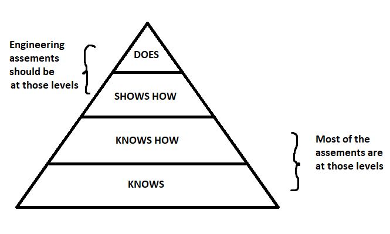

Re-Engineering Engineering Education
The first day of engineering school, the dean of engineering told us a few statistics that didn’t sit well with me. (It’s been 10 years since that day, so my memory might not be exact)
“Only 50% of you will work as engineers. The other half will do something else, maybe in finance, or business or non technical work. Of the remaining 50%, only 10% about go to graduate school”.
I would not expect the dean of business school or medicine to tell the students that 50% of the graduates will not work in the domain of their studies, so why is that the case for engineering school? After a quick search in my LinkedIn, out of 112 connections from my engineering class, 28 are not working in a technical field. The remaining either are exercising the profession of engineering or have switched to a different branch of engineering, i.e. they studied mechanical engineering but are working in software engineering (either via a professional jump or additional certifications). While my anecdotal evidence is not 50%, it is still a nonnegligible number of ~27%.
It’s difficult to interpret exactly why we have this phenomenon. A few of my MechE friends working in investment banking said that engineering school taught them a methodology to find solutions to problems more than the technical knowledge itself, and this is a transferable skill. Perhaps some of my peers decided from the start that they were not going to work in the engineering field, while others decided to work in investment banking perhaps for a more lucrative salary. It is no secret that engineering school is quite challenging. In my experience, the continuous high workload combined with difficult exams where, too often, the grades would be curved up because the averages were too low mixed with information overload made the studies very challenging.
GRADING IN ENGINEERING
I remember asking a few professors why the grades were curved. The answer I usually got was something along the line of “I can’t report all A’s to the Dean”, which I always found very weird. There seemed to be some underlying ideal grade distribution, perhaps a B? Other professors simply did not curve because students should not receive extra marks arbitrarily, which is a fair philosophy. However, this can lead to a higher failure rate and generate a phenomenon of “dodge this prof at all costs”.
I do remember one prof implementing the weirdest curving scheme ever: a multiplication factor. That professor wanted the average of the midterm and final to be 75%. Let’s say the average was 50% on the midterm. Then, a multiplication factor of 1.5 is applied (because 1.5 * 50% = 75%) on every grade. Let’s say you did poorly and got 10% on the midterm, so you get bumped to 15%. On the other hand, if you have 90% (and some students did), then you have 135%, and you get to keep that extra 35% for other assessments. This scheme greatly increases the grade distribution variance, and disproportionally helps the students who are far above the average. (In case you are wondering, this is a mathematical fact. Consider a random variable X, then Var(aX) = a^2*Var(X), which means the variance of the distribution increases by the square of the multiplication factor. No bueno.)
In my view, the grades inevitably influence the engineering studies experience. This motivated me to see if Engineering Schools can perhaps borrow ideas from other faculties or implement state-of-the-art evidence-based research to increase the overall student experience.
SHOULD ENGINEERING SCHOOL CONSIDER PASS-FAIL ?
In 2010, a Colorado State University (CSU) trial program was implemented to try an opt-in incoming first year students pass/fail grading system (ref 1). Out of the 448 first-year students, 138 enrolled in the program. The students enrolled in the program have identical classes, and the professors do not know which students are enrolled in the program. The only difference is at the end, a P/F grade is given instead of a traditional letter grade. After the first year, all students resume traditional grading. The authors reported there was a statistically significant lower GPA in the P/F cohort: the P/F have an average GPA of 2.55/4.00, whereas the traditional students have a 2.82/4.00 average GPA. While a lower GPA is observed, it is difficult to determine the cause(s). One theory proposed is that perhaps the students self-selected in a way such that weaker students chose the P/F options. Although the paper mentions the study will continue over 4 years, I could not find any follow up studies.
So should we drop the Pass-Fail consideration in engineering, given the result of the above study? I don’t think so. There is a large body of literature in medical education which reports that students have improved students have reduced stress and emotional exhaustion, and improved group cohesion amongst peers (ref 2). One study also reports that there was no statistical significance were found between pass-fail curriculum and traditional curriculums for medical school residency placements (ref 3). Furthermore, pass-fail systems promotes intrinsic motivation (when the student’s behavior is shaped by internal rewards) which leads to lifelong learning behavior and a growth mindset (ref 4).
To assess clinical competency in medicine, Miller’s pyramid model is quite useful and it is based on four pillars:
- Knows, i.e., the student can answer theoretical questions in an exam setting
- Knows how, i.e. the student can explain concepts like in an oral presentation
- Shows how, i.e. the student can apply the knowledge in a simulation setting
- Does, i.e. the student is assessed in a real-world settings like building an electric vehicle.
Miller demonstrated the importance of having more “shows how” and “does” assessments, especially if the evaluation method is based on a pass-fail criterion.

In my opinion, the main problem in the 2010 CSU study was in the implementation of the study as most first year courses are focused on the “knows” and “knows how” but not enough on the “shows how” and “does”. So in the context of engineering school, I would focus the evaluations on the “show how” and “does”. For example, consider a first year Statics class where future engineers learn how to draw free body diagrams to compute loads and moments of different structures and machines. Instead of having typical exams (short and long answer or multiple choice questions), I would test a higher order of knowledge by letting students via a design bridge competition where the bridge must withstand a certain threshold load along with a document supporting their design via engineering calculations. The completion of such a project implies understanding of the “knows” and “knows how”.
Also, I think in the eyes of employers, a much richer discussion is held when a prospective candidate explains the process of working through a project rather than talking about a grade obtained at an exam. Although, the grades are pass/fail, students can still express their individuality by the scope, impact and execution of their project.
EXPERIMENTAL LEARNING IN ENGINEERING?
When we think of engineers, we think of people that are problem solvers, thinkers, and tinkerers. Recent developments in evidence-based teaching methods have shown that experimental learning or “learning by doing” has a lot of promises in engineering undergraduate curriculum. While there are multiple types of experimental learning (flipped classroom, laboratory, collaborative learning, etc.), my personal favorite is project-learning. As the name states, project-based learning is when students acquire and consolidate their knowledge through projects. As Mike Tyson once famously said “everyone has a plan until they get punched in the mouth”, well I think there is a lot of truth to it. No matter how much time you spend in the classroom or in the textbook, only implementing the newly acquired knowledge through a project truly validates the comprehension. In my view, the video by Destin from the Smarter Every Day channel perfectly illustrates the point. Destin thought he understood well how a carburetor works, but by going through a project of making a see-through replica did he truly understand what was going on. Whenever you can tell a story about a project, in my opinion, you feel ownership about your education. This much better for long term memory and understanding because the carburetor is not just some question in an exam, but rather has a project and a story linked to it.
In light of what I wrote above, I theorize there exists a set of projects which completely covers all the subjects typically taught in an engineering degree, and performing those projects over exams fosters deeper understanding of the subject matter. I personally did not sit down and thought about how this project problem set looks like, but that exercise is left to the reader 🙂
_____________________________________________________
1 – K. Stanton and T. Siller, “A pass/fail option for first-semester engineering students: A critical evaluation,” 2011 Frontiers in Education Conference (FIE), 2011, pp. T2D-1-T2D-6, doi: 10.1109/FIE.2011.6143057
2 – Rohe DE, Barrier PA, Clark MM, Cook DA, Vickers KS, Decker PA. The benefits of pass-fail grading on stress, mood, and group cohesion in medical students. Mayo Clin Proc. 2006 Nov;81(11):1443-8. doi: 10.4065/81.11.1443. PMID: 17120399
3 – Ramaswamy V, Veremis B, Nalliah RP. Making the case for pass-fail grading in dental education. Eur J Dent Educ. 2020 Aug;24(3):601-604. doi: 10.1111/eje.12520. Epub 2020 Jul 8. PMID: 32107859.
4 – Reed, Darcy A. MD, MPH; Shanafelt, Tait D. MD; Satele, Daniel W.; Power, David V. MD, MPH; Eacker, Anne MD; Harper, William MD; Moutier, Christine MD; Durning, Steven MD; Massie, F. Stanford Jr MD; Thomas, Matthew R. MD; Sloan, Jeff A. PhD; Dyrbye, Liselotte N. MD, MHPE Relationship of Pass/Fail Grading and Curriculum Structure With Well-Being Among Preclinical Medical Students: A Multi-Institutional Study, Academic Medicine: November 2011 – Volume 86 – Issue 11 – p 1367-1373 doi: 10.1097/ACM.0b013e3182305d81
5 – Cassandra Sue Ellen Jamison, Jacob Fuher, Annie Wang & Aileen Huang-Saad (2022) Experiential learning implementation in undergraduate engineering education: a systematic search and review, European Journal of Engineering Education, DOI: 10.1080/03043797.2022.2031895